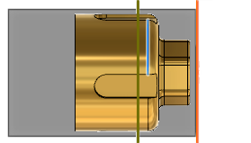

<div id="backHeight_Ref"><p>参照するエッジ、面、または頂点を選択します。</p>
<table class="tipTable" cellspacing="10">
<tr>
<td><center></center></td>
</tr><tr>
<td><center><p><b>エッジ選択の表示</b></p></center></td>
</tr></table>
</div>